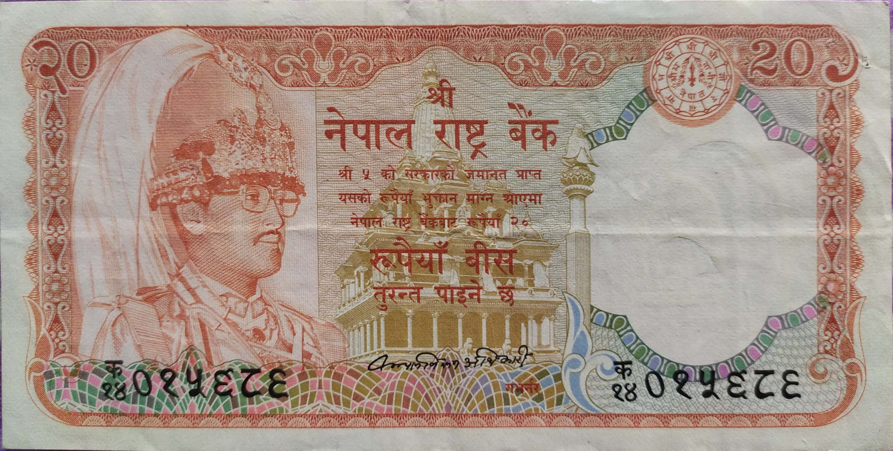
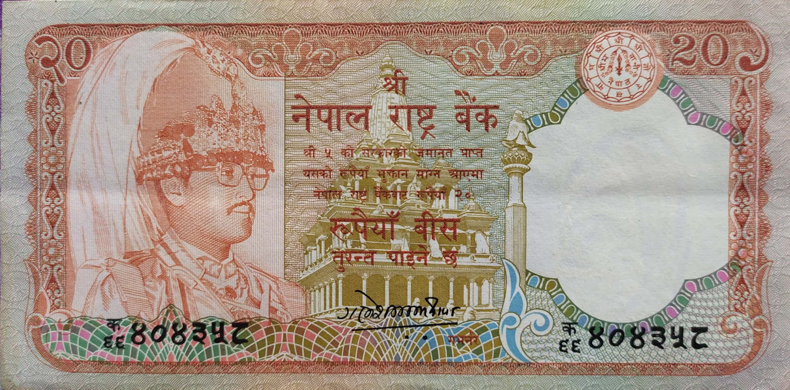
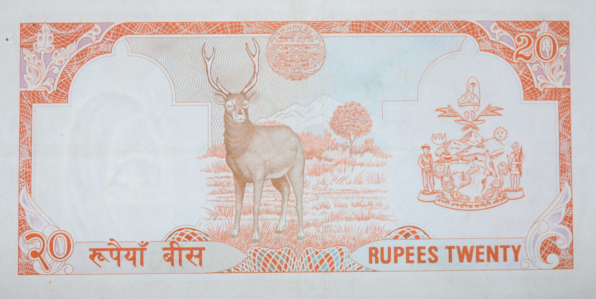
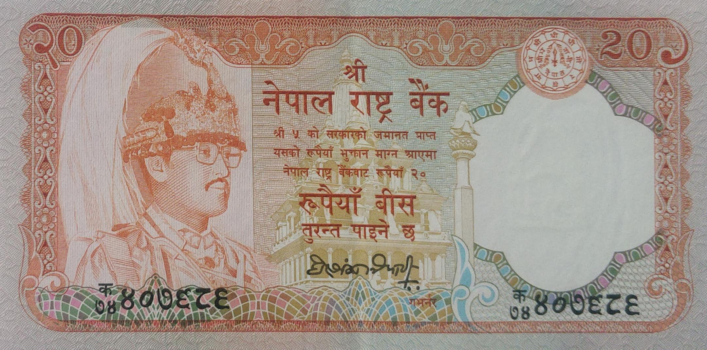
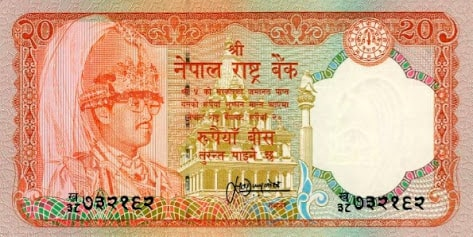
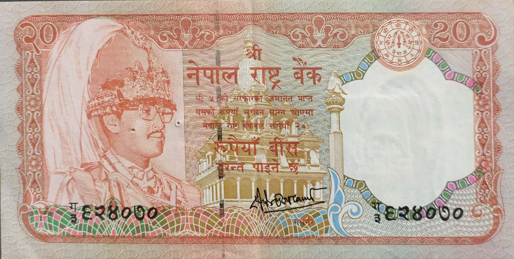
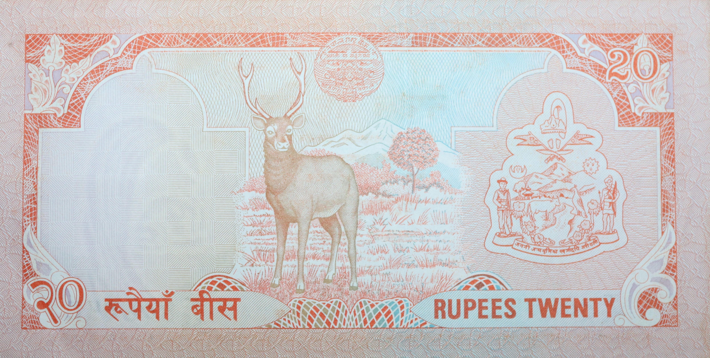

Kalyana Bikram Adhikari (June 13, 1979 to December 08, 1984)

Ganesh Bahadur Thapa (March 25, 1985 to May 25, 1990)


Ganesh Bahadur Thapa (March 25, 1985 to May 25, 1990)

Hari Shankar Tripathi (August 10, 1990 to Jan 17, 1995)

Satyendra Pyara Shrestha (Jan 18, 1995 to Jan 17, 2000)


Deependra Purush Dhakal (August 29, 2000 to April 27, 2000)
- Domination: Rupees 20
- Signature:
- Issued date: Between 1982 to 2001
- Front: Portrait of King Birendra & Temple of Lord Krishna, Patan
- Back: Swamp deer (Stag) with Mountains on the background
- Watermark: Plumed crown
- Size: 70 X 139 mm.
Facts:
- 6-Kul Shekhar Sharma
- 7-Kalyana Bikram Adhikari
- 8-Ganesh Bahadur Thapa
- 9-Hari Shankar Tripathi
- 10-Satyendra Pyara Shrestha
- 11-Dipendra Purush Dhakal